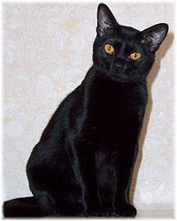

Bombaim (gato)
Bombaim é uma raça de gatos de pelagem curta e preta, originária dos Estados Unidos da América.
A história dessa raça começa quando a norte-americana Nikki Horner decidiu criar um gato que fosse a miniatura de uma pantera-negra.

Imagem Gato Bombaim
Características Físicas
O Bombaim deve ter um pelo completamente preto e curto, parecendo um veludo, deitado perto do corpo, sem pontos nem as ondas brancas, realçando seus músculos de pantera. Seus olhos devem ser grandes, redondos, expressivos e de cor intensa e luminosa. Sua tonalidade porém pode ir do ouro claro ao cobre.
História
A história dessa raça começa quando a norte-americana Nikki Horner decidiu criar um gato que fosse a miniatura de uma pantera-negra. Ela levou mais de 30 anos para criar esta nova raça. Seu ideal era um gato parecido com o birmanês, mas negro e com olhos cor de topázio.
Temperamento
Alguns gatos da raça de Bombay miam muito e no geral são extremamente afetuosos, desde que sejam socializados corretamente. Outra das características do comportamento do Bombay é que não são gatos muito ativos, embora sejam muito brincalhões. Vive bem com outros gatos machos ou fêmeas. Gosta muito de ronronar. É um gato que não gosta de ficar só por muito tempo e é um ótimo gato de apartamento.
Cuidados
Esses gatos são realmente vorazes e precisam de um cuidado especial com a alimentação para que não engordem muito.
Infelizmente, muitos nascem com uma deformação craniofacial e é necessário que sejam sacrificados logo após o nascimento para que não sofram no seu pouco tempo de vida, já que esta deformação causa muita dor a eles até que isso os mate.
Video relacionado